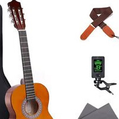

|
Affiliate Disclosure
Amazon: “As an Amazon Associate I earn from qualifying purchases.” Others: “When you buy something we recommend, we may get an affiliate commission — but it never affects your price or what we pick.” |
Egg Cooker for Hard Boiled Eggs
Cook Perfect Eggs!
Introduction
The Hardboiled Egg Maker has arrived. The Hardboiled Egg Maker is a useful kitchen appliance that makes it easier to cook excellent hardboiled eggs. It saves time and produces consistent results whether you eat eggs for breakfast, as a snack, or in recipes.
You no longer need to rely on heating water and guesswork to produce perfectly cooked eggs with the Hardboiled Egg Maker. Say goodbye to overdone or undercooked eggs and welcome to easily and precisely cooked eggs.
The Hardboiled Egg Maker is intended to make cooking easier for both busy professionals and home cooks. It gives a quick and healthy breakfast choice as well as a dependable and handy method of preparing hardboiled eggs. With this multipurpose kitchen appliance, you may enjoy flawlessly cooked eggs while also unlocking a world of culinary possibilities.
Recommended products in the above category:
-
Wireless Microwave Hardboiled Egg Maker, Cooker, Boiler & Steamer by EMSON
-
Electric Egg Cooker Boiler, Rapid Poacher, Food & Vegetable Steamer by Chefman
-
Egg Cooker for Hard Boiled Eggs, Egg Boiler, Egg Steamer by COOKOE
-
Electric Egg Cooker, Egg Steamer by MICOKAY
1. Wireless Microwave Hardboiled Egg Maker, Cooker, Boiler & Steamer by EMSON
The Perfect-size Hardboiled Egg Maker is designed with convenience and space-saving in mind. With dimensions of approximately 6 inches (15.24 centimeters) in height and 7.25 inches (18.41 centimeters) in width, it is compact and portable. This allows you to easily carry it around or place it anywhere in your kitchen without taking up much space on your countertop or in your cupboard.
Despite its compact size, this egg maker has an impressive capacity. It can cook and peel up to 4 eggs in each use, making it ideal for small households or individuals who enjoy having a few perfectly cooked hard-boiled eggs at a time.
When it comes to achieving the perfect level of doneness for your eggs, the mechanism of this gadget is wonderfully simple. It utilizes the power of your microwave to boil water, which in turn creates steam that cooks the eggs to perfection. All you need to do is add a small amount of water, set your timer for approximately 8.5 to 9 minutes, and wait. The result will be consistently perfect hard-boiled eggs with a firm yolk and tender whites.
Beyond its primary function of cooking eggs, this versatile gadget can also be used as a multi-purpose cooker. It excels at steaming other foods such as small potatoes and sweet corns. The beauty of steaming is that it creates a minimal mess while preserving the nutrients, flavors, and vibrant colors of vegetables. With this egg maker, you can easily enjoy a variety of steamed foods, expanding your culinary repertoire.
One of the remarkable features of this kitchen tool is its ability to peel eggs. After the eggs are cooked, simply shake the gadget at least 10 times to crack the outer shell. This cracking action makes peeling the eggs incredibly easy, saving you time and frustration in the kitchen. Say goodbye to painstakingly peeling eggs by hand and hello to hassle-free egg peeling with the help of this ingenious device.
Using and maintaining the Perfect-size Hardboiled Egg Maker is a breeze. It comes with clear and straightforward directions for use, making the preparation process hassle-free and quick. The provided instructions will guide you through the steps, ensuring that you achieve perfect results every time.
When it comes to cleaning, this egg maker is designed with convenience in mind. It is made of dishwasher-safe materials, allowing you to easily clean it without worrying about damage caused by dishwashing liquid or cleaning agents. Simply place the removable parts in the dishwasher, and they will come out clean and ready for your next cooking adventure.
In summary, the Perfect-size Hardboiled Egg Maker offers a compact and space-saving design while providing a generous capacity for cooking and peeling eggs. Its simple mechanism utilizes the power of your microwave to cook eggs to perfection. It also serves as a versatile multi-purpose cooker for steaming other foods. With the added feature of egg peeling, this gadget is truly an amazing kitchen tool. It is easy to use and clean, making your cooking experience hassle-free and enjoyable.
2. Electric Egg Cooker Boiler, Rapid Poacher, Food & Vegetable Steamer by Chefman
The No More Guesswork Egg Maker takes the uncertainty out of cooking eggs, offering a quick and efficient solution for boiling, poaching, and steaming up to 6 eggs in just minutes. Say goodbye to the traditional stovetop method and hello to perfectly cooked eggs with ease.
To ensure precise cooking, the included measuring cup allows you to add the correct amount of water based on your preferred egg style. Whether you’re aiming for soft-boiled, hard-boiled, poached, scrambled, or even omelets, this egg maker has you covered. And when your eggs are ready, a convenient ready buzzer will sound, letting you know it’s time to enjoy your deliciously cooked eggs.
When it’s time for breakfast, there’s no need to wait for your eggs to cool down before moving them. With the handy tray lifting tool, you can easily transfer your hot, freshly cooked eggs straight to your plate. Whether you’re having a leisurely brunch or a quick morning meal, this egg maker ensures that breakfast is a hassle-free experience.
Not only does this egg maker excel at cooking eggs, but it also proves its versatility in the kitchen. You can use it to steam a variety of vegetables, making it a convenient tool for preparing nutritious sides or even complete meals. From breakfast to lunch, dinner, and snack time, this egg maker offers endless possibilities for culinary creativity.
Cleaning up is a breeze with this compact and user-friendly egg maker. The BPA-free lid, cooking tray, and poaching trays are all dishwasher safe, making cleanup quick and convenient. No more arguments over who has to do the dishes, as this versatile appliance makes cleanup a breeze.
In addition to its functionality, the No More Guesswork Egg Maker prioritizes safety and durability. It is equipped with advanced safety technology, ensuring long-lasting performance and peace of mind while using the appliance. For further reassurance, Chefman provides a 1-year assurance, allowing you to purchase with confidence.
The compact size of this egg maker makes it a perfect fit for any kitchen, whether it’s a spacious one or a cozy college dorm. Its versatility and ease of use also make it an ideal companion for travel or on-the-go cooking. It truly is a kitchen tool that offers convenience without sacrificing quality.
If you’re looking for a practical and thoughtful gift, the No More Guesswork Egg Maker is a perfect choice. Whether it’s for a busy professional, a college student, or anyone who appreciates a quick and delicious breakfast, this versatile appliance is sure to be a hit.
In summary, the No More Guesswork Egg Maker eliminates the guesswork and hassle from cooking eggs. It provides fast and precise cooking, offers versatility beyond eggs, is easy to clean, and ensures safety and durability. With this appliance, you can confidently enjoy perfectly cooked eggs and explore a variety of culinary options.
3. Egg Cooker for Hard Boiled Eggs, Egg Boiler, Egg Steamer by COOKOE
The Multifunctional Quick Egg Boiler is a versatile and efficient kitchen appliance that can quickly prepare a variety of egg dishes and other steamed foods. With the easy-to-follow instructions, you can effortlessly achieve the perfect soft, medium, or hard-boiled eggs, as well as steamed vegetables and dumplings, in just minutes. Whether you have picky eaters, a large family, or a busy schedule, this egg boiler is the perfect tool to simplify your cooking routine. From boiled eggs to scrambled eggs to single omelets, simply press the start button and your delicious meal will be ready in no time.
The egg boiler features a high-quality plastic egg rack tray that is not only durable but also easy to clean. With its capacity to cook 8 eggs at once, it meets the needs of families and office workers alike. Say goodbye to the hassle of washing dishes and unnecessary arguments, as this versatile and convenient egg boiler makes meal preparation a breeze. Its small size makes it a perfect fit for any kitchen, whether it’s a spacious home kitchen, a college dorm, or even for travel purposes.
Convenience and safety are top priorities with the Multifunctional Quick Egg Boiler. It is designed to be easy and convenient to use—simply press the on/off button to start the cooking process. The appliance also features an automatic shut-off function to prevent excessive cooking and ensure safe operation. With this perfect egg machine, you can cook with peace of mind and enjoy an improved quality of life.
Not only does the Multifunctional Quick Egg Boiler excel in functionality, but it also adds a touch of style to your kitchen. With its attractive color options, it can seamlessly blend in with any kitchen decor style. Additionally, it makes for a lovely gift for various occasions such as Easter, Mother’s Day, or birthdays of your friends and loved ones.
We stand behind the quality and performance of our product. Our guarantee is unparalleled, offering an unconditional return policy. If you’re not completely satisfied with your purchase, simply send it back for a full refund. Additionally, if you encounter any problems with the egg boiler, contact us directly, and we will promptly replace it for you. Your satisfaction is our top priority, and we are committed to providing you with the best customer experience possible.
In summary, the Multifunctional Quick Egg Boiler is a versatile and convenient kitchen appliance that simplifies the cooking process for various egg dishes and steamed foods. It offers a high capacity, durable material, convenient and safe features, and is perfect for any occasion. With our unmatched guarantee, you can purchase with confidence, knowing that your satisfaction is our utmost priority. Upgrade your cooking experience with the Multifunctional Quick Egg Boiler and enjoy delicious meals with ease.
4. Electric Egg Cooker, Egg Steamer by MICOKAY
The Seven Egg Capacity of this egg cooker allows you to cook up to 7 eggs at a time, giving you the flexibility to prepare a larger batch of eggs for your family or meal prep. Whether you prefer your eggs soft, medium, or hard-boiled, this egg cooker can accommodate your desired level of doneness. Not only does this save you time and water compared to traditional boiling methods, but it also ensures that your eggs are cooked evenly and consistently. Additionally, the eggs cooked in this egg cooker are known to be easy to peel, making the egg preparation process even more convenient.
With your purchase of the hard-boiled egg cooker, you will receive a complete set of accessories to enhance your cooking experience. The package includes 1 egg boiler, 1 steamed egg rack, 1 measuring cup, 1 transparent cover, 1 instruction manual, 1 color box for storage, and 1 power cord for easy operation. Each component is thoughtfully included to ensure that you have everything you need to make the most of your egg cooker.
The egg cooker features a timer with an auto shut-off function, providing convenience and safety. Simply add water to the cooker using the included measuring cup, place the eggs on the egg holder, and cover it with the transparent lid. Set the desired cooking time on the timer, and the egg cooker will automatically shut off once the eggs are cooked to perfection. This eliminates the need for constant monitoring and reduces the risk of overcooking your eggs.
Cleaning the egg steamer is a breeze as it is designed for easy disassembly. The egg holder and other removable parts can be easily separated from the main unit, allowing you to clean them with detergent and a sponge. This ensures that your egg cooker remains hygienic and ready for your next cooking session.
The versatility of the rapid egg cooker makes it a perfect appliance for various egg preparations. Whether you’re a busy individual looking for a quick breakfast solution or a large family in need of a reliable egg cooker, this appliance can handle it all. From hard-boiled eggs to soft-boiled eggs, poached eggs, and even scrambled eggs, the rapid egg cooker provides you with a range of options to suit your preferences.
In summary, the Seven Egg Capacity of this egg cooker offers convenience and efficiency, allowing you to cook multiple eggs at once. With the included accessories, timer with auto shut-off, easy cleaning process, and versatile cooking options, this egg cooker is a valuable addition to your kitchen. Enjoy perfectly cooked eggs every time with this reliable and user-friendly appliance.
To summarise, the Hardboiled Egg Maker changes the way eggs are cooked. It streamlines the process, saves time, and maintains consistency. This kitchen equipment is here to make your life easier, whether you’re a busy professional searching for a quick breakfast solution or a home cook looking for a reliable way to prepare eggs. Embrace the Hardboiled Egg Maker’s ease, precision, and variety to enjoy flawlessly prepared eggs that open up a world of culinary delights.
Everyday Jewelry: Constant use Jewelry

Everyday jewelry is meant to be versatile and effortlessly complement your daily attire.
Nutrition and Flavor: Exploring the World of Food and Beverages

Food and beverages are essential aspects of our daily lives. They not only provide nourishment and sustenance but also offer enjoyment, socialization, and cultural expression.
Common Car Parts and Accessories: Know Your Car

Common car parts and accessories play a crucial role in maintaining and enhancing the functionality, safety, and aesthetics of vehicles.
The Melodic Symphony: Exploring the World of Musical Instruments

Welcome to the world of music, where enchanting melodies and captivating rhythms come to life through the power of instruments. In this exploration, we invite you to discover some of the most beloved ...
Transformations in the Automobile Industry: The Electric Vehicle Revolution

The automobile industry is currently undergoing a significant transformation, driven by new technologies and evolving consumer preferences. Several key trends and developments are reshaping the landsc...
Essential Baby and Kids Products: A Guide for Parents and Caregivers

When it comes to baby and kids products, there are a wide range of options available to parents and caregivers.